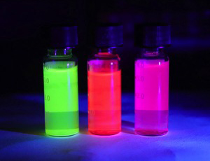
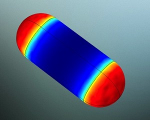
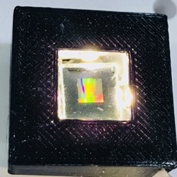

研究兴趣方向
纳米科学 - 纳米颗粒
合成, 组装, 表征, 应用
纳米颗粒的合成与表面改性
 纳米晶体，通常是指那些由数百或数千个原子构成的非常小的晶体颗粒，尺寸范围为1-100纳米。
绝大部分纳米晶体都表现出不寻常的、颗粒尺寸大小相关的变化的光学、发光、磁性和电子特性。
纳米晶体在我们日常生活的方方面面得到广泛的应用，例如：彩色显示、药物靶向输送、
太阳能电池、快速生物检测等。纳米晶体的这些特性都高度依赖于纳米晶体的种类（如金、银、二氧化硅等）、
尺寸（纳米级单分散性）、形状（三角形、球形、立方体、棒状等）、表面特性（核壳结构、配体分子等）等等。
为了在实际应用中充分的展现出纳米晶体的出色性质，目前科学界最大的研究领域之一就是探索在溶液中合成具有可控形态、
高单分散性和可控表面功能化的纳米晶体的方法。
一个高效可控的纳米晶体合成方法是在纳米晶体后续的多种性质研究中最基础的保障。
我所感兴趣的研究方向为：金、银、铂、钯等金属纳米晶体的液相合成方法，及其尺寸、形貌的控制；
无机、半导体纳米晶体的液相合成方法。
(图：具有不同形状的金纳米晶体。版权所有。)
纳米晶体，通常是指那些由数百或数千个原子构成的非常小的晶体颗粒，尺寸范围为1-100纳米。
绝大部分纳米晶体都表现出不寻常的、颗粒尺寸大小相关的变化的光学、发光、磁性和电子特性。
纳米晶体在我们日常生活的方方面面得到广泛的应用，例如：彩色显示、药物靶向输送、
太阳能电池、快速生物检测等。纳米晶体的这些特性都高度依赖于纳米晶体的种类（如金、银、二氧化硅等）、
尺寸（纳米级单分散性）、形状（三角形、球形、立方体、棒状等）、表面特性（核壳结构、配体分子等）等等。
为了在实际应用中充分的展现出纳米晶体的出色性质，目前科学界最大的研究领域之一就是探索在溶液中合成具有可控形态、
高单分散性和可控表面功能化的纳米晶体的方法。
一个高效可控的纳米晶体合成方法是在纳米晶体后续的多种性质研究中最基础的保障。
我所感兴趣的研究方向为：金、银、铂、钯等金属纳米晶体的液相合成方法，及其尺寸、形貌的控制；
无机、半导体纳米晶体的液相合成方法。
(图：具有不同形状的金纳米晶体。版权所有。)
纳米颗粒的“直接组装法“和微纳加工
 现代纳米科学和纳米技术的发展中，最大挑战之一是如何将化学合成的纳米晶体有效地从液相转移到固相表面。
换句话说，想要将纳米晶体的各种优异性质运用到实际生活中，不可避免的需要将在溶液中合成的纳米晶体
高效的制备成为能够实际应用的器件。为了更好地控制形貌和大批量生产，大多数纳米晶体都是在溶液中合成的
然而，拿一小瓶液体来日常使用是不切实际的。虽然，纳米晶体溶液可以很容易地通过滴注或旋涂的方法转移到固体基底表面。
但这些方法往往会导致纳米晶体在基底表面的团聚和无序。这在某种程度上屏蔽了大部分的纳米晶体的固有特性。
所以我们需要开发一种高效的方法将纳米晶体从溶液中可控的组装到基底表面并形成特定的排列或图案。
这样才可以最大限度地实现纳米晶体在基底表面上的应用潜力。“直接组装法”是在不改变其固有特性的情况下，
将合成的纳米晶体直接组装在预先设计好的基底表面，以形成所需要的高级纳米结构。为了成功的实现纳米晶体的“直接组装”，
其关键因素是应用一个适当的外部驱动力，将纳米晶体推或拖到基底上的特定位置。
我目前的研究重点就是：基于电泳沉积法开发一种高效的单纳米晶体整理的直接组装方法。
(图：改编自10.1002/adma.201904551。版权所有。)
现代纳米科学和纳米技术的发展中，最大挑战之一是如何将化学合成的纳米晶体有效地从液相转移到固相表面。
换句话说，想要将纳米晶体的各种优异性质运用到实际生活中，不可避免的需要将在溶液中合成的纳米晶体
高效的制备成为能够实际应用的器件。为了更好地控制形貌和大批量生产，大多数纳米晶体都是在溶液中合成的
然而，拿一小瓶液体来日常使用是不切实际的。虽然，纳米晶体溶液可以很容易地通过滴注或旋涂的方法转移到固体基底表面。
但这些方法往往会导致纳米晶体在基底表面的团聚和无序。这在某种程度上屏蔽了大部分的纳米晶体的固有特性。
所以我们需要开发一种高效的方法将纳米晶体从溶液中可控的组装到基底表面并形成特定的排列或图案。
这样才可以最大限度地实现纳米晶体在基底表面上的应用潜力。“直接组装法”是在不改变其固有特性的情况下，
将合成的纳米晶体直接组装在预先设计好的基底表面，以形成所需要的高级纳米结构。为了成功的实现纳米晶体的“直接组装”，
其关键因素是应用一个适当的外部驱动力，将纳米晶体推或拖到基底上的特定位置。
我目前的研究重点就是：基于电泳沉积法开发一种高效的单纳米晶体整理的直接组装方法。
(图：改编自10.1002/adma.201904551。版权所有。)
纳米晶体的光学与电学性质
 纳米晶体的尺寸相关的光学和电学特性在漫长的人类历史中吸引了大量的关注。例如，在教堂中广泛使用的彩色玻璃就 归功于玻璃和金属纳米颗粒的混合。纳米晶体的加入使原本无色的玻璃变得颜色鲜艳，但仍保持其透明度。 现在最新的QLED电视也是在大量的科研基础上，从量子点纳米晶体的电致荧光特性中演化而来。 由于量子的能够在电子的激发下发射出高度单一、纯净的单色光，所以OLED电视所呈现的色彩更为鲜艳，对比度更高。 目前，而且研究人员已经能够通过选择性地合成具有特定形貌的纳米晶体来调整其光学和电学特性。 纳米晶体的光学和电学特性已被广泛用于许多领域，如文件防伪、彩色显示器、生物标记和传感等。 因此，对纳米晶体的光学和电学特性进行更为深入研究和认识可以更好的促进其在实际生活中各个方面的应用。 我所感兴趣的研究方向主要有：纳米晶体的等离子光学效应，半导体纳米晶体的量子尺寸效应等。 （图：基于CdSe的量子点。版权所有。）
单颗粒光谱
 众所周知，纳米晶体的突出特性与它们的尺寸和形貌有很大关系。
任何细小的尺寸形貌改变就有可能导致纳米晶体表现出完全不同的性质。
例如，硒化镉量子点（CdSe）纳米晶体的量子尺寸和荧光特性就于其尺寸有极大的相关性。
3-5纳米的尺寸差距就可能导致硒化镉量子点的荧光颜色从无到有，从红色到紫色。
所以，纳米晶体研究中的一大挑战是如何研究纳米晶体的形貌和它们各种特有性质
之间的关系。一个不可避免的事实是，目前的合成技术几乎不可能完美的控制所有的纳米晶体都具有绝对相同的形貌。
无论如何，在单次纳米晶体的合成中颗粒与颗粒之间总会有几纳米到十几纳米的误差。
因此，常见的表征手段所得到的结果只能代表所有纳米晶体的集合特性。为了有一个更对纳米颗粒的特性有精细的理解，
就有必要把单个纳米颗粒分离开来，只研究某一个选定的纳米晶体，这样就可以更为准确的将纳米颗粒的形貌和其特性一一对应。
在纳米颗粒的光学特性方面，我使用如暗视野显微镜、野视野显微镜、共聚焦显微镜等先进的光学显微镜来研究单个纳米晶体。
（图：尼康暗场显微镜。版权所有。）
众所周知，纳米晶体的突出特性与它们的尺寸和形貌有很大关系。
任何细小的尺寸形貌改变就有可能导致纳米晶体表现出完全不同的性质。
例如，硒化镉量子点（CdSe）纳米晶体的量子尺寸和荧光特性就于其尺寸有极大的相关性。
3-5纳米的尺寸差距就可能导致硒化镉量子点的荧光颜色从无到有，从红色到紫色。
所以，纳米晶体研究中的一大挑战是如何研究纳米晶体的形貌和它们各种特有性质
之间的关系。一个不可避免的事实是，目前的合成技术几乎不可能完美的控制所有的纳米晶体都具有绝对相同的形貌。
无论如何，在单次纳米晶体的合成中颗粒与颗粒之间总会有几纳米到十几纳米的误差。
因此，常见的表征手段所得到的结果只能代表所有纳米晶体的集合特性。为了有一个更对纳米颗粒的特性有精细的理解，
就有必要把单个纳米颗粒分离开来，只研究某一个选定的纳米晶体，这样就可以更为准确的将纳米颗粒的形貌和其特性一一对应。
在纳米颗粒的光学特性方面，我使用如暗视野显微镜、野视野显微镜、共聚焦显微镜等先进的光学显微镜来研究单个纳米晶体。
（图：尼康暗场显微镜。版权所有。）
理论建模和物理场仿真
 理论建模和物理场仿真是研究纳米晶体特性的一个非常强大的工具。 在日常实际实验之余，理论建模和仿真能够极大的提高课题的研究效率和结果的可信度、可行性。 在纳米科学的研究过程中，理论模拟和实际实验是相辅相成的。 一方面，实际实验中所得到的已知事实，可以用来于理论模型仿真所得到的结果进行比较，以支持建模的可靠性。 另一方面，通过调整理论建模中的参数，仿真结果可以用来预测和指导我们的实际实验的研究方向。 此外，结合经典理论，理论建模可以用来支持和解释纳米晶体或基于纳米晶体的器件所产生的种种现象，以便对现象背后的原理有更深入的了解。 COMSOL Multiphysics是我主要使用的仿真软件。 通过选择符合实际实验的基础物理场模块，建立符合或接近实际实验条件的实验模型，设定研究对象的固有物理参数、尺寸等研究条件，以及规定物理场边界条件等， COMSOL仿真能够最大限度的还原或者预测设定条件下，研究对象的特有物理表现。 我所主要使用的物理场有：光学、AC/DC、传热和结构力学。 (图：光照下金纳米棒上的电场分布。版权所有。)
纳米晶体器件及应用
 科学的发展支持了技术的繁荣，而科学的繁荣又得益于它所支持的技术的应用。 将纳米晶体的优秀特性转化为实际应用的器件是纳米科学研究中极为重要的一个环节。 我在纳米科学的研究中致力于探索将基础研究转化为原型器件或这将纳米晶体的应用概念化、实体化的可能性。 基于各种不同的纳米晶体所具有的固有特性，纳米晶体有潜力在社会发展的各个方面展现其独特的魅力。 例如，通过精细的结构设计，由金或银纳米晶体阵列所构建的图案就有可能被用于制备先进的光学防伪标识。 再如，密集的荧光量子点阵列可用于开发高分辨率和高保真度的彩色显示器。 虽然，将一个概念化的实验室成果转换为实际应用的产品需要诸多技术支持，需要各个领域的专业人士通力合作。 我作为一个基础纳米科学的研究者，努力做出力作能及的贡献。 致力于探索力作能及范围之内，纳米科学领域中具有具有广大应用前景的研究课题。 (图：由LED照亮的金纳米棒阵列，并显示出彩虹色。)